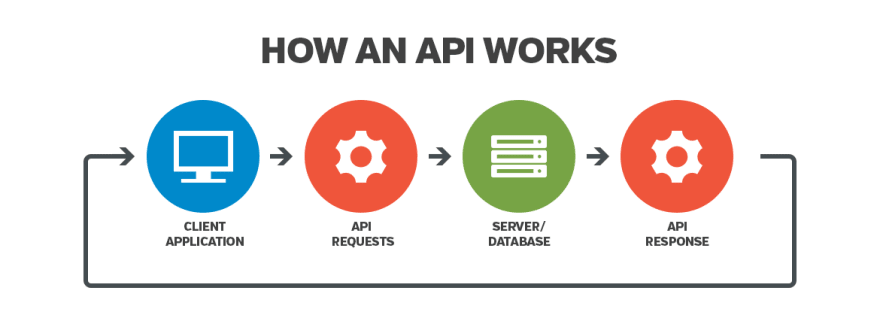
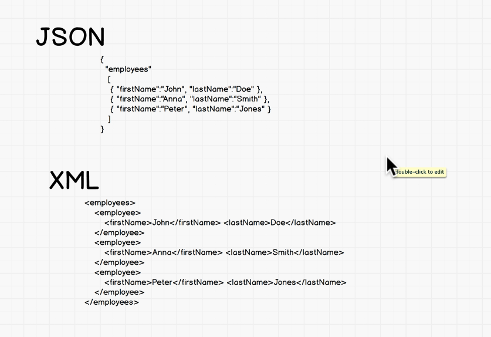
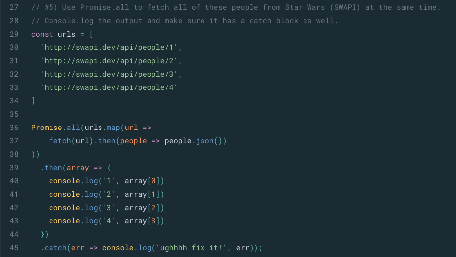
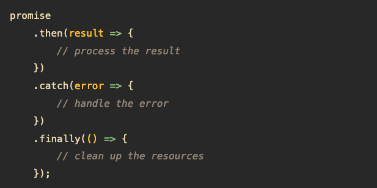
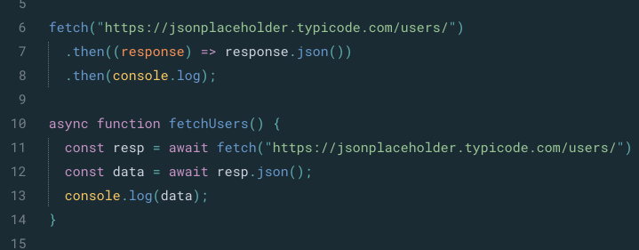
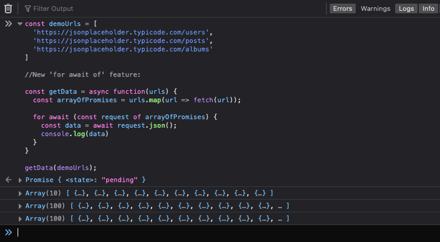

APIs
"As a developer, a lot of our work is just pulling data from APIs." - Wes Bos
Table of Contents
APIs
Application Programming Interface
APIs are mechanisms that enable two software components to communicate with each other using a set of definitions and protocols. For example, the weather bureau’s software system contains daily weather data. The weather app on your phone “talks” to this system via APIs and shows you daily weather updates on your phone.
API architecture is usually explained in terms of client and server. The application sending the request is called the client, and the application sending the response is called the server. So in the weather example, the bureau’s weather database is the server, and the mobile app is the client.
REST APIs (aka RESTful APIs)
There are several different ways that APIs can work, depending on when and why they were created. The most popular way nowadays is REST.
REST stands for Representational State Transfer. REST defines a set of functions like GET, PUT, DELETE, etc., that clients can use to access server data using HTTP.
The main feature of a REST API is statelessness. Statelessness means that servers do not save client data between requests. When systems follow the REST paradigm, the server does not need to know anything about what state the client is in and vice versa. In this way, both the server and the client can understand any message received, even without seeing previous messages.
This constraint of statelessness is enforced through the use of resources, rather than commands. Resources are the nouns of the Web - they describe any object, document, or thing that you may need to store or send to other services
Resources for APIs:
HTTP / HTTPS
HTTPS - Hyper Text Transfer Protocol Secure.
HTTP is a protocol (system of rules) for fetching resources such as HTML documents.
It's the foundation of any data exchange on the Web and it is a client-server protocol, which means requests are initiated by the recipient, usually the Web browser. A complete document is reconstructed from the different sub-documents fetched - for instance, text, layout description, images, videos, scripts, and more.
HTTPS is a secure version of the HTTP protocol, using the SSL/TLS protocol for encryption and authentication.
HTTP methods: GET, POST PUT, DELETE
In general, GET requests are for getting data, POST requests are for sending data, PUT requests are for updating data and DELETE requests are for deleting data.
JSON
JSON - JS (JavaScript) Object Notation.
The most common and easy way to transport data is in JSON format in the body of the request. JSON is a format that represents JavaScript objects as strings and is built into the JavaScript language with some handy methods:
- JSON.stringify(obj) — turns a JS object into a JSON string
- JSON.parse(string) — turns a JSON string into a JavaScript object
Most of the time, when your frontend sends some data to the backend it will be formatted into JSON, and when your backend receives that data it will be parsed from JSON back into a JavaScript object. It's the same in the other direction: when your backend sends some data to the frontend it will be formatted into JSON, and when your frontend receives that data it will be parsed from JSON back into a JavaScript object.
Note: JSON is neither frontend nor backend. It is a data format or structure used to pass data between the frontend and backend. It can also be used to transfer data between multiple backends or frontends.
An alternative to JSON is XML (extensible markup language). However, JSON is now more popular.
AJAX
AJAX - Asynchronous JavaScript XML.
Ajax is a set of web development techniques that uses various web technologies on the client-side to create asynchronous web applications.
With Ajax, web applications can send and retrieve data from a server asynchronously (in the background) without interfering with the display and behaviour of the existing page. By decoupling the data interchange layer from the presentation layer, Ajax allows web pages and, by extension, web applications, to change content dynamically without the need to reload the entire page.
In simple terms, working asynchronously means that your code continues to run while the targeted part of your web page is trying to reload (compared to synchronously, which blocks your code from running until that part of your page is done reloading).
Note: In practice, modern implementations commonly utilize JSON instead of XML.
The term Ajax has come to represent a broad group of Web technologies that can be used to create a Web application which communicates with a server in the background, without interfering with the current state of the page.
Shortest description:
AJAX is a technique for accessing web servers from a web page - a frontend tool used to communicate with the backend.
Fetch API
Fetch is an interface for making an AJAX request in JavaScript. It is implemented widely by modern browsers and is used to call an API.
Example uses: loading texts, images, or structured data asynchronously, to update an HTML page.
As a newer native JavaScript API, Fetch allows you to make network requests similar to the older XMLHttpRequest API. According to Google Developers Documentation, Fetch makes it easier to make asynchronous requests and handles responses better than XMLHttpRequest.
The main difference between Fetch and XMLHttpRequest is that the Fetch API uses Promises, and so avoids callback hell. The Promise object greatly simplifies the code, especially if used in conjunction with async/await.
The fetch() method takes one mandatory argument: the path to the resource you want to fetch. It returns a Promise that resolves to the Response to that request — as soon as the server responds with headers — even if the server response is an HTTP error status. You can also optionally pass in an init options object as the second argument (see Request).
An example fetch request:
fetch(url) .then(response => response.json()) .catch(err => console.log(err))
Resources for Fetch() method:
Promises
A Promise is a special JavaScript object. It produces a value after an asynchronous (aka, async) operation completes successfully, or an error if it does not complete successfully due to time out, network error, and so on.
A Promise is a proxy for a value not necessarily known when the promise is created. It allows you to associate handlers with an asynchronous action's eventual success value or failure reason. This lets asynchronous methods return values like synchronous methods: instead of immediately returning the final value, the asynchronous method returns a promise to supply the value at some point in the future.
A Promise is always in one of these states:
- pending: initial state, neither fulfilled nor rejected
- fulfilled: meaning that the operation was completed successfully
- rejected: meaning that the operation failed
Successful call completions are indicated by the resolve function call, and errors are indicated by the reject function call.
Some examples of times when promises are useful:
Structure of a Promise
You can create a promise using the promise constructor like this:
const promise = new Promise((resolve, reject) => {
// Make an asynchronous call and either resolve or reject
});
Using the Promise.all method
Promise.all is actually a promise that takes an array of promises as an input (an iterable). Then it gets resolved when all the promises get resolved or any one of them gets rejected. Here's an example:
Note: We can now use Promise.allSettled instead, if we want to return any Promises which resolved, even if some were rejected.
Using the Promise .finally() method
The .finally() method is always executed whether the promise is fulfilled or rejected. In other words, the .finally() method is executed when the promise is settled.
The .finally() method was introduced in ES2018. In the .finally() method, you can place the code that cleans up the resource when the promise is settled, regardless of its outcome. By using the .finally() method, you can avoid duplicate code in the .then() and .catch() methods.
Resource: JavaScript Promise .finally() tutorial
Resources for Promises:
- How to Resolve or Reject Promises in JS
- Using Promises (MDN Web Docs)
- All you need to know about Promise.all
Async/await
An async function is a function that returns a Promise; it's declared with the async keyword, and the await keyword is permitted within it.
The benefit of async/await is that it makes code easier to read. The async and await keywords enable asynchronous, promise-based behavior to be written in a cleaner style, avoiding the need to explicitly configure promise chains. It's syntactic sugar - Promises working under the hood, but a nicer way to code them!
The same function two ways - 1st with standard Promises and 2nd with async/await Promises:
Using the 'for await...of' statement
This lets you loop through multiple async/await calls.
Resources:
Example of Promises using 'for await...of':
